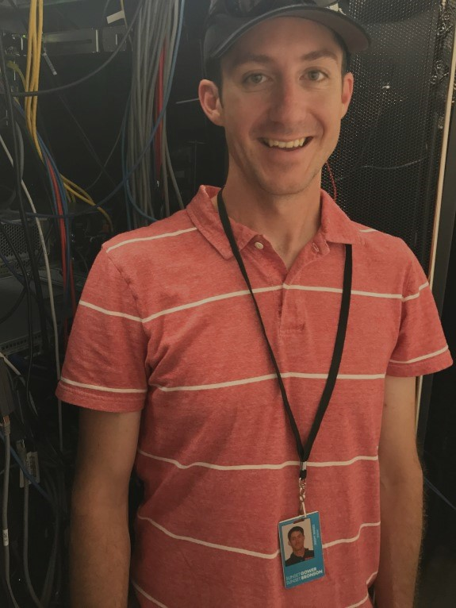
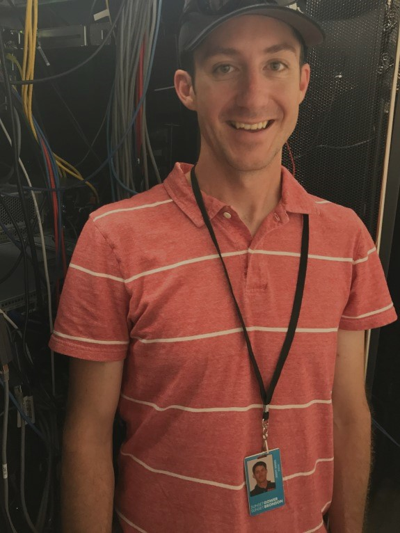

Welcome! My name is Jeremy Barnes and I am a software and systems engineer with 4 years of experience in software development and 10 years of experience in systems engineering.
While I enjoy many aspects of systems engineering, I have found that my passion for software development has increasingly grown over the last 3 years. This started with a very intriguing software project to develop an automated audio file encoding pipeline for use at my current company. Eager to learn more, my passion has led me to enroll in the Full-Stack Software Development Bootcamp through the UCLA Extension program to gain additional competence in web stack software development technologies. While enrolled in the coding bootcamp I have created various front-end, back-end and full-stack projects, as well as RESTful API services.
Nearing the UCLA bootcamp graduation, I find myself armed with the experience to build a variety of applications using an assortment of programming languages, the assurance in my ability to learn nearly any new language or technology and the motivation to propel my career forward confidently in the direction of software development.
Currently, I am looking to transition into a mid-level software development role on a team of highly-driven engineers to learn, provide mentorship and problem-solve in a collaborative environment.
UCLA Extension Full-Stack Web Development Bootcamp (2019)
Bucknell University Bachelor's in Computer Science (2006)
Flintridge Preparatory School High School Diploma (2001)
C#, C++, Java, HTML, CSS, JavaScript (ES5-ES8), TypeScript, SQL, PowerShell, Windows Batch, MySQL, SQL Server, MongoDB, Azure Cosmos, Firebase, React.js, jQuery, Express.js, Electron.js, Sequelize, Mongoose, Socket.io, Bootstrap, DataTables, Mocha.js, Chai.js, Git, Node.js, .Net, Heroku, Azure, Visual Studio, Visual Studio Code, Eclipse, TCP/IP & VLAN network configuration, firewall configuration, network security, high performance & high reliability storage systems, Windows Server administration, SQL Server administration